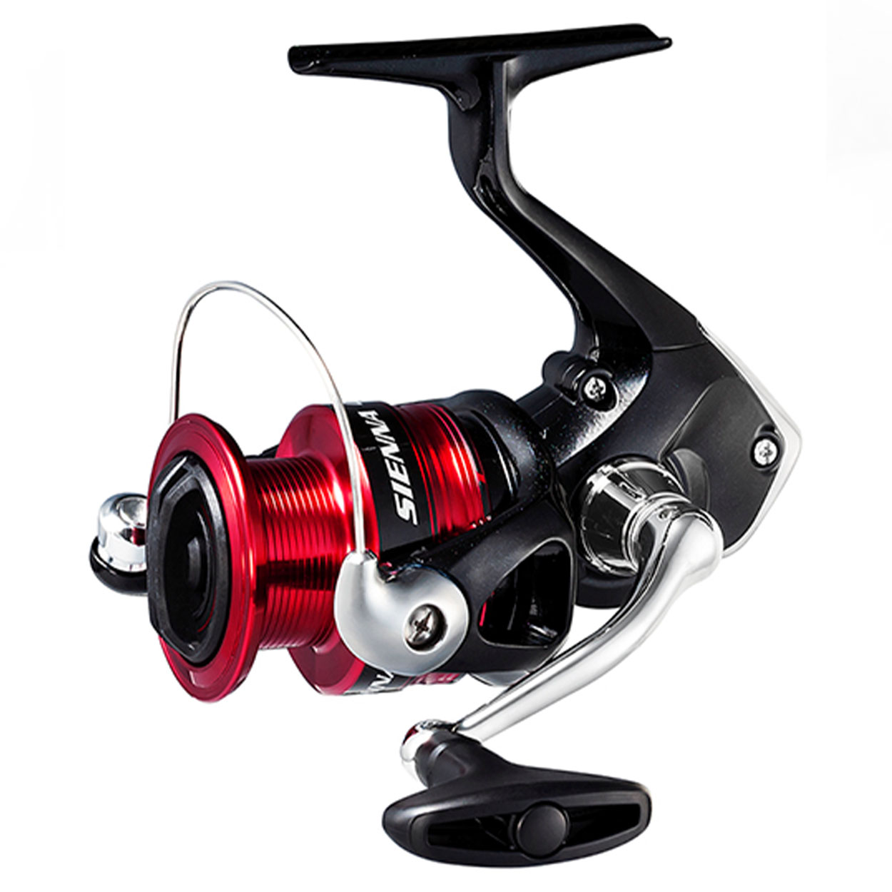

NOVEDADES/NOTICIAS
Carrete Shimano Sienna 4000FG
Sienna FG representa una mejora respecto a su versión anterior, siendo un carrete bien equilibrado con una configuración de 3+1 balineras, ofreciendo un rendimiento destacado a un costo sorprendentemente accesible. Integra el sistema de manejo de la línea de propulsión que permite lanzamientos más extensos y menos enredos causados por el viento. Los carretes Sienna emplean el Super Stopper II, asegurando un anti-retroceso inmediato y sin holguras en la dirección opuesta.
PROHIBIDO LA VENTA DE TIBURONES PANGACIUS
La introducción de cualquier organismo exótico, amenaza a la biodiversidad local, altera la
cadena trófica, genera hibridación (nuevos híbridos) y por lo tanto ocasiona la pérdida de material genético e
introducción de agentes patógenos desconocidos.
Por este alto riesgo que representa esta especie invasora, el Ministerio de Medio Ambiente categorizó al
pangasius como especie invasora y prohibió su introducción al país.
ARTEMIA SALINA MEJOR ALIMENTO PARA ALEVINES
Las propiedades nutricionales de este crustáceo, particularmente en sus primeros estadios las hacen muy adecuadas para su empleo en acuariofilia como alimento vivo para alevines y peces pequeños. Son ricas en lípidos y ácidos grasos insaturados, aunque según el estudio, pueden contener más o menor contenido de calcio. Sin embargo, no deja de ser un excelente alimento para todo tipo de peces e invertebrados, promoviendo su pigmentación y un buen estado de salud.